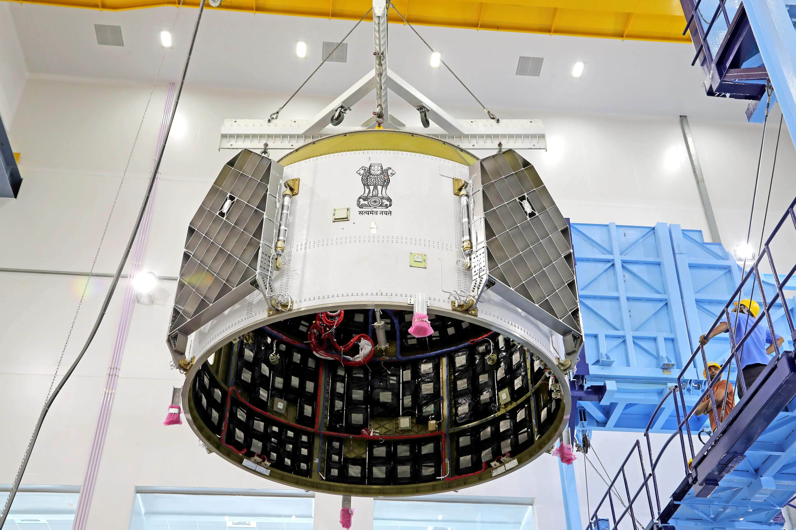
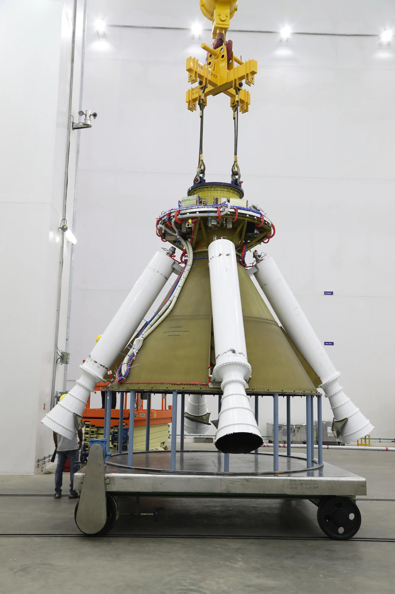

GALLERY:



Gaganyaan is a mission by the Indian Space Research Organisation (ISRO) to demonstrate human space flight capability by sending a manned mission to an orbit of 400 km for three days and bringing them safely back to Earth.
1 )Demonstrate India's human spaceflight capability
2) Develop technologies for future space exploration
Conduct microgravity experiment
Crew capacity: 3 astronauts
Design: Orbital module (crew module + service module)
Features: Life support, safety systems, re-entry capabilities
Rigorous process to choose the best astronauts Training: Extensive preparation for spaceflight challenges